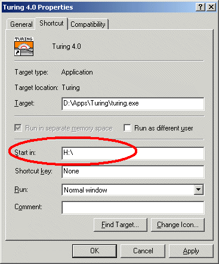
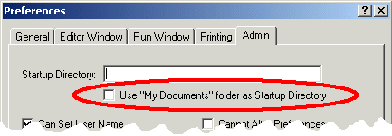
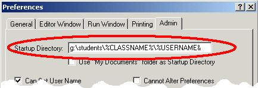
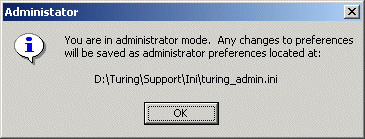
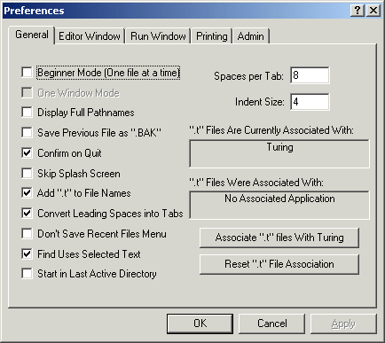
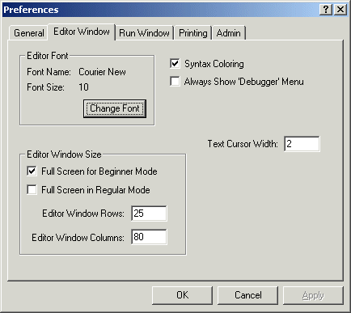
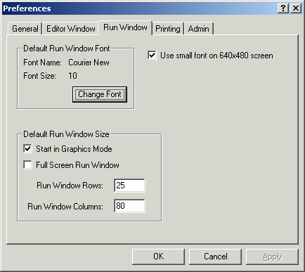
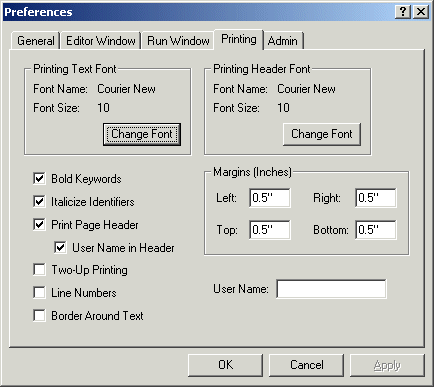
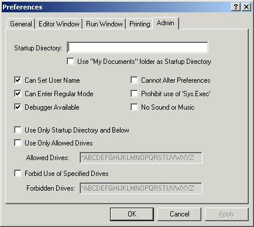
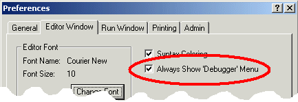

Turing Teacher/Administrator Guide
This is the Turing Teacher/Administrator guide. It contains most of the
information that you will need to administer the Turing 4.0 software.
It should be read by those who are teaching courses using Turing 4.0
or are in charge of administering Turing 4.0
This guide provides information on the Turing environment (the editor, the
run windows, etc.) It does not provide any information on the Turing
programming language itself.
Note that there is some overlap with the Turing
Teacher/Administrator Quick Start Guide.
Table of Contents
- Making Certain You Have the Lastest Version
- Mandatory Administration Issues
- Changing System Preferences
- Turing Preferences
- Parallel Port and Turing 4
- Missing Features from Turing 4
- The Turing Debugger
- Student Distribution
- Technical Support
1. Making Certain You Have the Lastest Version
Turing 4.0 is updated regularly. To find out what version you
are currently running, click the About Turing menu item in the
Help menu. To find out the current version of Turing, go to
http://www.holtsoft.com/turing/support/#currentversion. This lists the
current version of the software.
This page also lists which bugs have been fixed and when new features have
been added. The page also contains a section
(
http://www.holtsoft.com/turing/support/#turing4patches)
where a file can be downloaded that will update most versions of Turing to
the latest version.
If you are a teacher or an administrator at a school and require a complete
installation file (as opposed to the publically available patch), contact Tom
West at (416) 978-8363.
2. Mandatory Administration Issues
Turing 4.0 has been designed to run on either a network or installed on
individual stand-alone machines. Running on a network is often preferred
because of each of installation, however, Turing will load somewhat faster
when it is launched if it is stored locally.
Turing 4.0 has been designed to run on either a network or installed on
individual stand-alone machines. Running on a network is often preferred
because of ease of administration. However, Turing, like any other application
will load somewhat faster when it is launched if it is stored locally.
There are a few administration issues that must be addressed to configure
Turing properly.
-
Set the start-in (often called the "working") directory properly.
It is important that the start-in directory for Turing be set to the
student's home directory. This can be done in a variety of ways, from
least to most complicated.
- Many schools have the student's home directory mapped to a drive
(often H:\). If this is the case, then set the start-in (or
working) directory of the shortcut or menu item used to launch
Turing to the mapped drive.
The shortcut's working directory can be modified by
changing it's start-in or working directory property. (To
display the Properties dialog box, right click on the
shortcut or menu item and select Properties from the pop-up menu.)

Properties for a Shortcut under Windows 2000
This requires changing the shortcut's properties requires
write access to the shortcut. Note that commercial menu
front-ends have their own way of setting the start-in
directory of applications.
- If the "My Documents" folder is mapped to the students home
directory, you can set the preferences to make Turing use the
"My Documents" folder as the start-in folder. Note that
this option is the preferred option for home users, where the
"My Documents" folder is the home directory.

The Use "My Documents" Folder in the Admin Pane
To change the preference, enter Administrator
mode (see Changing System Preferences below)
and set the Use "My Documents" Folder checkbox in the
Admin pane of the Turing Preferences (see
Turing Preferences below).
- If each student's home directory is specified differently (i.e.
there is no mapping of the home directory to a drive), then
you may need to use environment variables to create a useable
path. For example, if students files are stored
in g:\class108\[Student Name] and there is an environment
variables USERNAME that contains the student's name, then the
the start-in directory for the shortcut should be set to
g:\class108\%USERNAME%.
- Occasionally users have reported situations like the previous
case, except that Windows seems unable to set the start-in
directory properly using environment variables.

The Startup Directory Text Field in the Admin Pane
To set the start-in directory, enter Administrator
mode (see Changing System Preferences below)
and set the Startup Directory text field in the
Admin pane of the Turing Preferences appropriately (see
Turing Preferences below) including specifying
the directory using the environment variables.
- Set either Beginner or Regular Mode for Students.
Turing can be set to Beginner mode, in which case only one
file is open at a time. Opening up another file closes the first one.
When the program is running, the Editor window minimizes. In this way,
only one window is usually visible at a time. In this fashion,
Beginner mode is similar to the old DOS Turing.
In Regular mode, any number of files can be opened and each
appears in its own editor window.
In general, we suggest Beginner mode for grade 9 and 10 and
Regular mode for all others. If you are using Beginner
mode, we suggest that you point out to the students that they can use
the Prefences to change to Regular mode when they feel
comfortable with the environment.
To change the preference, you will need to enter Administrator mode
(see Changing System Preferences below) and change
the Beginner Mode preference in the General pane
appropriately (see Turing Preferences below).
- Windows 95 and the Turing Net module
If you are using Windows 95 (not Windows 98/Me/NT/2000/XP) and you
wish to use the Turing Net module in order to write programs
that communicate with other computers, then you may need update the
Window 95 networking code.
This can be done by running the program located at:
[Turing directory]\support\Microsoft\W95ws2setup.exe
This program from Microsoft patches Windows 95 networking code. It
must be run on every computer running Windows 95 unless the machines
boot from a server.
- Parallel Port Usage
If you are intend to use Turing to control devices attached to the
parallel port (using the parallelput and parallelget,
and are running under Windows NT/XP/2000, you will need to install a
device driver. (Windows NT/XP/2000 do not allow direct access to the
system hardware.). The device driver can be installed by running the
program located at:
[Turing directory]\support\dlportio_install.exe
Further information can be found in Parallel Port
and Turing 4.
3. Changing System Preferences
Turing uses a two level preference model. There is a central set of
preferences that are kept in
[Turing Directory]\Support\Ini\turing_admin.ini
These preferences are the same for all users and are called the System
Preferences. A second set of preferences
is stored in each student's home directory in a file called turing.ini.
These preferences override the central preferences and allow students to
individually modify the behaviour of Turing.
When a student modifies the preferences, the turing.ini file in the
student's home directory is
changed. To change the System preferences (i.e. the contents of the
turing_admin.ini file), Turing must be started
up with the command line
turing -admin
This can be done by starting up a DOS window, doing a cd to the
directory in which turing.exe is stored and then typing
turing -admin. The user must have write access to the
directory in which the turing_admin.ini file is stored.
When Turing is launched, it will display a message box on start-up indicating
that it is in Administrator mode and where the preferences will be
stored.

Administration Mode Notification
Selecting Preferences from the File menu will display a tabbed
dialog box of all the Turing preferences. If you are in Administrator
mode, then an extra tab labeled Admin will appear with extra
preferences that can only be set by the Administrator. Note that individual
students cannot override the preferences that appear on the Admin pane.

Preferences in Administrator Mode
Once the Preferences have been set, the Administrator can exit Turing.
4. Turing Preferences
This section lists all the preferences available in Turing sorted by the
pane
"General" Pane
The "General" Pane
- Beginner Mode
When Beginner mode is set, only one file can
be can be loaded into the Turing environment at a time. The Editor
window is minimized every time the Run window is active and vice-versa.
The debugger cannot be displayed or used. If this box is not set, then
Turing is in Regular mode and multiple files can be open
simultaneously. Beginner mode is recommended for students who
are overwhelmed or confused by too many Turing windows (especially
students in grades 9 and 10).
- One Window Mode
This option is not available in Turing 4.0. It will be used to switch
between MDI and SDI modes in a future version of the software.
- Display Full Pathnames
The full path name and not just the file name are displayed in the
Editor window's title bar and recent files submenu.
- Save Previous File as ".BAK"
When a file is saved over top of an older file, the older file is
renamed with a .BAK suffix (i.e. test.t to test.bak)
- Confirm on Quit
When the user closes the last editor window, Turing displays a dialog
box asking whether the user wishes to Quit. On systems where loading
is slow (usually over a network), this can stop the users from
accidentally quitting Turing.
- Skip Splash Screen
When Turing starts up, it normally displays a "Splash" screen with
the version number. The Splash screen disappears when the user clicks
a button or after 3 seconds. Turning this option off causes the
Splash screen not to be displayed.
- Add ".t" to File Names
When a Save File dialog box appears and the user specifies a file name
without a file suffix, Turing adds ".t". This can be removed by the
user.
- Convert Leading Spaces into Tabs
When Turing saves a file, it normally converts groups of leading spaces
into TAB characters, saving disk space. The number of spaces per tab is
specified by the Spaces per Tab text field. If this check box is
not selected, then the spaces are not converted.
- Don't Save Recent Files Menu
Normally Turing lists the last several files opened. However, if
students do not have individual accounts, then this feature may
not be useful and can be turned off.
- Find Uses Selected Text
By default, Turing uses the Windows behaviour that when a Find command
is given and there is selected text, the selected text is copied to
the Find dialog box. If you don't like this behaviour, then unsetting
this option will stop this behaviour. If it is not set, then
an additional menu item is placed in the Search menu that finds
the next occurance of the currently selected text.
- Start in Last Active Directory
If students are writing large projects in many subdirectories, then
this option can be enabled to automatically start Turing in the last
directory in which a file was loaded or saved. The Turing preferences
file is still stored in the student's home directory.
- Spaces per Tab
This specifies the number of spaces that a Tab is converted to and from.
When Turing reads a text file into the editor, all tabs are converted on
to spaces. If you created the Turing file on an editor where Tabs
are a different number of spaces, then change this value appropriately.
- Indent Size
When Tab is pressed in the Turing editor, it is converted into spaces.
The number in the Indent Size text field determines how many
spaces the Tab key is converted to. Note the Spaces per Tab is
used when Turing reads/writes files. The Indent Size field is
used when Turing responds to the Tab key.
- File Association
Microsoft Windows has the ability to associate files with a particular
suffix with specific programs. The Turing environment can be associated
with the following file suffixes: .t, .tur, .dem,
.ti and .tu. To associate these file suffixes with
Turing, click the Associate ".t" files with Turing button. To
reset the file associations back to what they were before, click the
Reset ".t" File Association.
"Editor Window" Pane

The "Editor Window" Pane
- Editor Font
You can change the font size and typeface used in the editor window.
If you change the typeface, you must choose a monospaced font where
bold and non-bold letters are the same size. Many monospaced fonts
have different sizes for bold and non-bold letters.
- Full Screen for Beginner Mode
If in beginner mode, editor windows are automatically in full
screen mode. You can change this behaviour buy unsetting this checkbox.
- Full Screen for Regular Mode
Editor windows are normally 25x80 columns (or the size specified by the
Editor Window Rows/Columns text fields). If this checkbox is
set, editor windows are automatically maximized to fill the screen.
This option is suggested for systems with 640x480 screen resolution.
Users can change the window size by clicking the full screen/normal
window button in the window's title bar.
- Editor Window Rows/Columns
These text fields control the size of editor windows when first created.
- Syntax Coloring
When selected, parts of Turing programs appear in different colors:
comments appear in green, strings in red, keywords in bold face,
predefined identifiers in black, and user identifiers in blue.
- Always Show 'Debugger' Menu
In the interest of keeping the interface as simple as possible, and
because most students do not use the debugging features, Turing does
not display the Debugger menu by default. Instead, the user selects
Show Debugger Menu from the Run menu. Setting this
checkbox causes the Debugger menu to always be displayed.
- Text Cursor Width
By default, the cursor (correctly called the caret) is 2 pixels wide,
allowing it to be seen easily in the Editor window. However, some
users prefer the caret to be 1 pixel wide and some prefer the caret
to overlay an entire character (in a similar manner to DOS editors).
Legal values are 1 (which represent a 1 pixel thick caret), 2 (which
represent a 2 pixel thick caret), and 3 (which represents a text cursor
that covers the entire character.
"Run Window" Pane

The "Run Window" Pane
- Default Run Window Font
You can change the font size and typeface used in the Turing run window.
If you change the typeface, you must choose a monospaced font. Note that
changing the size of the run window font may cause odd output in Turing
programs that were written assuming a particular character size.
- Start in Graphics Mode
This makes the initial run window a graphics window. The user can use
graphics without the setscreen ("graphics") command in the program.
Output that scrolls off the top of the screen is lost. In text mode,
graphics are not allowed, but all text output is kept and can be
scrolled, saved, and printed at any time.
- Full Screen Run Window
This causes the default run window to occupy the entire screen.
- Run Window Rows/Columns
This sets the size of the default run window. Changing the size may
cause programs that assume a 25x80 window to malfunction.
- Use Small Fonts on 640x480 Screen
A standard 25x80 window does not quite fit on a 640x480 screen with a
standard size task bar. As a result, without this option, the default
graphics mode run window appears with scroll bars. This option causes
Turing to use a slightly smaller font for 640x480 run windows so the
entire window fits on the screen. This option may cause odd output in
Turing programs that were written assuming a particular character size.
"Printing" Pane

The "Printing" Pane
Note that the options marked with an asterisk (*) can be set in the printing
dialog.
- Printing Font/Printing Header Font
You can change the font size and typeface used in printing. If you
change the typeface, you must choose a monospaced font where bold and
non-bold letters are the same size. Many monospaced fonts have different
sizes for bold and non-bold letters.
- Bold Keywords/Italicize Identifiers *
This allows for "syntax coloring" of printouts. Keywords can be placed
in bold and identifiers italicized.
- Print Page Header
On some systems, a header page is automatically printed out and there is
little reason for a page header. Unsetting this checkbox will cause
printouts not to have any header on the printed programs.
- User Name in Header
Normally the user name is displayed in the header. However, on some
systems the user name is non-descriptive or non-existent. This allows
you to disable the printing of the user name on such systems.
- Two-Up Printing *
This is a paper saving measure. Text is printed in landscape mode with
two "pages" per piece of paper. This means that listings use half the
amount of paper. Of course, the font is much smaller.
- Line Numbers *
This prints out line numbers in front of each line of the program. This
is useful if you are printing out a listing to hand out to the class.
- Border Around Text
Some users like to have a thin border printed around the text for ease
of determining the margins, etc. Setting this checkbox causes Turing
to display a hairline border around program printouts.
- Margins
If you need to change the margins on printouts (for example, to
facilitate the insertion of program listings into 3-ring binders), then
you can do by changing the values in the text fields. Margins are
expressed in inches.
- User Name
On systems where the user name is non-descriptive or non-existent,
the user can enter a name that will appear on the printout allowing
it to be identified. If students are choosing inappropriate user names,
this preference can be disabled in the Admin tab preference dialog.
"Admin" Pane

The "Admin" Pane
Note, the Admin pane is only available in administrator mode. Students
starting Turing will not have access to this dialog box.
- Startup Directory
Users will start in the directory listed in this text field. If left
blank, Turing will use the working directory of the shortcut used to
start Turing. If no working directory for the shortcut is specified,
the directory where Turing is installed is used. Environment variables
prefixed and suffixed with % signs can be used here (example:
g:\students\%username%). Note that in most cases, this text field
should be blank.
- Use "My Documents" folder
The "My Documents" folder can be used as the startup directory instead
of the contents of the Startup Directory text field. This is most
commonly used in single user systems.
- Can Set User Name
Allows the user to specify the user name to appear on top of printouts.
This checkbox can be unset if students are choosing inappropriate
user names.
- Can Enter Regular Mode
Allows the user to turn off the beginner mode preference. This
checkbox can be unset if it is desirable to have all students working
in beginner mode.
- Debugger Available
This checkbox can be unset in order to stop students getting access to
the debugger.
- Cannot Alter Preferences
When set, this stops students from accessing the Preferences dialog.
It also stops Turing from reading the student's turing.ini file.
This can be set when it is important to have a uniform set of
preferences on all student machines, or when there is no log-on
procedure and students are sharing machines.
- Prohibit use of 'Sys.Exec'
When set, the Sys.Exec and system procedures do nothing.
This can be set if there is a system security concern about students
starting arbitrary programs.
- No Sound or Music
When set, the Turing sound and music commands do nothing.
- Use only Startup Directory and Below
CAUTION! This option only provides rudimentary security and
is to be used only on systems where the operating system cannot
provide proper security. This option will not allow students to
save or load to any directory other that their startup directory
or directories created in the startup directory. This option does
not stop students from browsing the names of files in other
directories, only from loading or saving files in them.
- Use Only Allowed Drives
CAUTION! This option only provides rudimentary security and
is to be used only on systems where the operating system cannot
provide proper security. This option allows students to load
files only from the set of drives specified in the text field. The
'*' represents network drives.
- Forbid Use of Certain Drives
CAUTION! This option only provides rudimentary security and
is to be used only on systems where the operating system cannot
provide proper security. This option prevents students from loading
files from the set of drives specified in the text field. The
'*' represents network drives.
5. Using the Parallel Ports in Turing 4
Under Turing 4.0 and , it is possible to access the IBM PC's parallel port
for reading and writing. This is normally done using the parallelput
and parallelget commands. (In Turing 4.0, you can use
PC.ParallelPut and PC.ParallelGet to access ports other than
LPT1.)
Under Windows 95/98 and Me, the operating system allows direct access to
the parallel port. Under Windows NT, 2000 and XP, access to the parallel
port is restricted by the operating system. In order to access the port,
under Windows NT, 2000 and XP, it is necessary to install a device driver on
each machine that will be accessing the parallel port. The needed device
driver installer is located at:
[Turing directory]\support\dlportio_install.exe
where [Turing directory] is the directory in which Turing was
installed. Executing this program will install the device driver in the
Windows System directory of the machine upon which it is executed.
Lastly, before accessing the parallel port, check that the parallel port
is in normal mode and not in bi-directional, PS/2,
EPP or ECP mode. You can determine which mode the parallel
port is in using the Device Manager. In the list of devices in the Device
Manager window, double click Ports (COM and LPT), and then the
LPT (or PRN) port. This displays a property sheet about
the parallel port. Take a look at what it says about it. If it is in a
non-original mode (i.e. mentions bi-directional, PS/2,
EPP or ECP mode), then you will probably need to adjust the
systems BIOS settings.
(Under Windows 2000 the Device Manager can be displayed by selecting the
System Control Panel from Settings in the Start menu. Select the Hardware
tab and then click the Device Manager button.)
If the setting for the parallel port needs to be changed, restart the machine,
and press the appropriate key to enter the BIOS Set Up Program (the key varies
between machines, but is usually noted on the screen). Often the parallel
port settings are found in Advanced Settings of the program. The
parallel port should be set to Normal, Standard, AT
or Unidirectional mode. (All four names are different descriptions
of the same mode.) Once this is done and the new settings are saved, then
start the machine into Windows. Once in Windows, select Shut Down
and turn the machine completely off. Once the machine is off, wait at
least 10 seconds in the powered-off state. Then restart the machine.
(While shutting down the machine should not be necessary, we have had several
cases where the change only took when the machine had been powered-down
and restarted.)
6. Missing Features from Turing 4
Turing 4.0 does not yet incorporate all the features that currently exist
in Object Oriented Turing 3.1.1 and are intended for future Turing releases.
Over the next few months, new features will be added and updates to Turing
will be made available on our web site. The features to be added are:
- View Variables
- The Sprite module
If you have immediate need of any of these features, please continue to
use the Object Oriented Turing 3.1.1 software. Ontario users can obtain
the software through their OESS software representative.
To determine the current release of Turing, check the Turing web site at
http://www.holtsoft.com/turing/support
7. The Turing Debugger
The current version of Turing has a Debugger facilities that allow students
to follow execution of a program either pausing after each line of execution
or executing slowly while highlighting each line of execution. Because of
the confusing nature of the debugger for many students, the default
configuration of Turing does not display the debugger menu until the student
requests it by selecting the Show Debugger Menu from the Run
menu.

Always Show 'Debugger' Menu in the Editor Window Pane
If you wish students to have a more regular exposure to the Debugger, you
can set a System preference to cause Turing to always display the Debugger
menu. To set the this preference, enter Administrator mode (see
Changing System Preferences below)
and set the Always Show 'Debugger' Menu checkbox in the
Editor Window pane of the Turing Preferences.
8. Student Distribution of Turing 4.0
The Ontario Ministry license does not include the right to redistribute the
software to students. If you wish to give the software to students, a
separate license must be obtained directly from Holt Software.
If your school does not have such a license, students can purchase the
software for home use by printing and then mailing an order form found
http://www.holtsoft.com/studentbuy.
This order form can also be used to allow interested students to purchase
textbooks.
If your school has purchased a redistribution license (almost 200 schools have
done so), then you may redistribute the Turing software to your students.
You can either burn copies of the CD to distribute to students or place the
Turing installer file onto your school Internet server and give your students
the URL.
If you place this file on your school internet server, you must not make
any links from your web pages to the software.
This will prevent other users of the web from downloading your software. If
you place links from your school's web site, then at some point a web search
engine will find the software and post its location to the internet at large,
allowing for large scale piracy (and a very overloaded school web server).
If there are no links to the software, then only those who have been told
the exact URL will be able to download the software.
Note that if you are copying a number of different programs onto a single
CD for redistribution, you may rename the Turing installer program to
something more descriptive.
Permanent student redistribution licenses can be purchased for $500-$750
for most schools. If you are interested in purchasing a student
redistribution license, contact Chris Stephenson at (416) 978-6476 or
chris@hsa.on.ca
9. Technical Support
If you have problems, questions or suggestions about the Turing software,
contact technical support at:
| Telephone: | | (416) 978-8363
|
| Toll free: | | 1-800-361-8324
|
| Fax: | | (416) 978-1509
|
| E-mail: | | west@hsa.on.ca
|